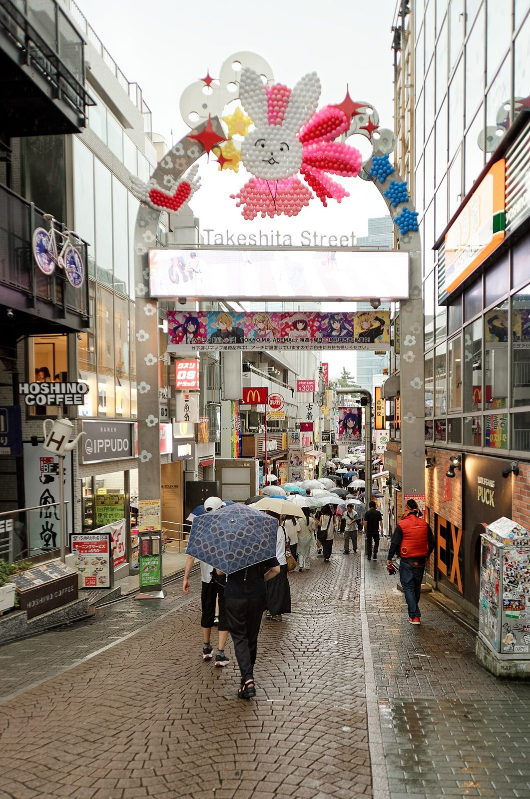

References / Signage / 476
Takeshita Street gate, Harajuku
The entrance arch of Harajuku’s Takeshita Street in 2024, crowned with a balloon rabbit, stars, and sparkles above daisy-patterned posts.
- Source
- Wikimedia Commons: Takeshita street, Tokyo, 20240822 1032 5383.jpg
- Creator
- Jakub Hałun (photograph); gate and decoration by unrecorded makers
- Made
- Photographed 22 August 2024
- Style
- Kawaii (partial fit; agent-proposed, not yet reviewed by a person)
- Moods
- Cute, playful, cheerful
- Evidence
- Inspected the Commons photograph by Jakub Hałun at 1280 × 1930 px. Also compared a CC0 photograph by Syced from November 2024, in which the balloon rabbit is gone and the arch carries a pink banner reading “かわいいがすぎる〜” with two dot-eyed characters.
- Reviewed
- Rights
- Open license, stored. License: CC-BY-4.0. Rights policy


Context
Takeshita Street is a street in Harajuku, Tokyo (Wikidata Q3179287). The photographer describes the image as “Takeshita street, Harajuku, Tokyo” and dates it 22 August 2024. Wikimedia Commons.
The gate decoration changes over time: the November 2024 photograph by Syced shows a printed banner in place of the balloon figure. Wikimedia Commons.
Observed
- A steel arch spans the street on two posts decorated with small white daisy shapes; the words “Takeshita Street” sit above a light box.
- On top, a rabbit built from white and pink balloons has dot eyes and a small smiling mouth; it rises out of a burst of pink and red balloons.
- Yellow and blue stars made of balloons and red four-pointed sparkle shapes surround the rabbit.
- Under the light box hangs an anime banner with six large-eyed characters.
- Beyond the gate, a narrow pedestrian street is crowded with umbrellas, shop signs, and a McDonald’s sign.
Why it belongs
The gate is kawaii at street scale: one friendly face, scattered stars and sparkles, and a pink-and-white palette, used to mark the entrance to a youth shopping street.
The temporary balloon figure shows how the style is used for seasonal, changeable decoration rather than permanent architecture.
Borrow
Mark an entrance or a page header with one character and a scatter of stars and four-pointed sparkles.
Use a small repeated flower shape as a pattern on a plain structural element.
Measured
Machine-extracted by tools/image-traits.py on . Full measurement.
- Mean chroma
- 0.09
- Palette
- #f3f6f5 15%
- #7d6b57 6%
- #897662 6%
- #5c564a 5%
- #aca59a 4%
- #696458 4%
- #a49889 4%
- #938d83 4%

